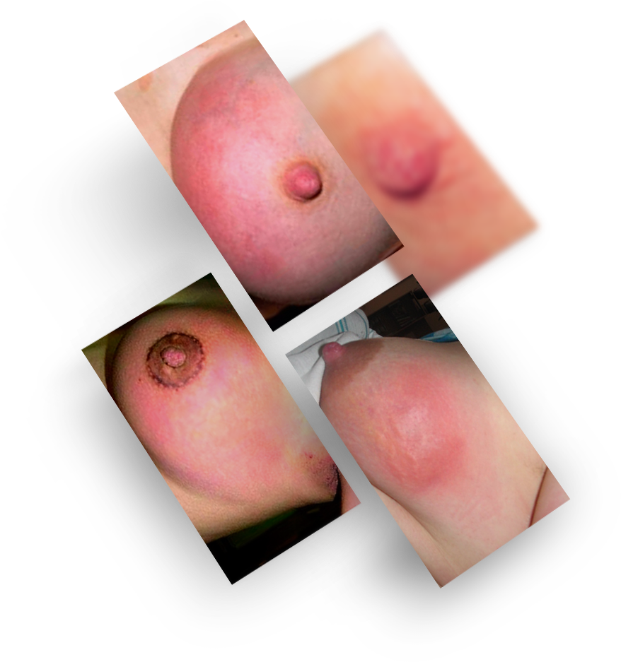

Осталось до конца акции
6 причин подтверждающих эффективность
натуральных компонентов
основных симптомов (боль, жар, отек и др.) крем поностью устраняет
часа необходимо на обезболивающий эффект
часов, чтобы полностью забыть о проблеме
часа полное восстановление функции груди
процентов профилактика мастита и его многочисленных осложнений
Показания: появление первых симптомов лактостаза (ощущение тяжести в молочных железах, болезненность, легкое покраснение).
Способ применения: после кормления и сцеживания смазать больной участок, втирая крем по направлению к соску.
Действие: снимает боль и другие симптомы лактостаза (покраснение, припухлость, ощущение тяжести и т.п.); предупреждает развитие мастита; восстанавливает лактацию.
Заказать со скидкойLactActive Forte оказывает целый спектр лечебного и профилактического действия
Основная проблема состоит в том, что лактостаз – это не болезнь, а граница между нормой и патологией. Между тем, граница между нормой и патологией хрупка и ненадежна. Нередко сложно установить черту, где уже стоит говорить не о лактостазе, а о гнойном мастите. Ведь организм кормящей мамы ослаблен длительным периодом вынашивания ребенка и родами, а грудное вскармливание, бессонные ночи и постоянные волнения мало способствуют восстановлению сил.
На фоне сниженного иммунитета инфекция может развиваться необычайно быстро. Поэтому врачи нередко назначают антибиотики неоправданно рано, поскольку боятся доверять «домашним средствам». С другой стороны, часто встречаются случаи, когда помощь поступила слишком поздно и за упущенные часы молодая мама расплачивается операцией на груди, без которой можно было бы обойтись.
Поэтому просто чудесно, что сегодня при первых признаках лактостаза я могу предложить своим пациенткам абсолютно безопасное и, вместе с тем, эффективное средство, которое устраняет все болезненные симптомы и надежно предупреждает мастит.
Константинова И.В.Зав. отделением женской консультации
Несвоевременное и/или неадекватное лечение лактостаза приводит к маститу (воспаление молочной железы). Как утверждает Национальное руководство по акушерству РФ, столь печальное развитие событий происходит у каждой десятой кормящей россиянки.
Мастит угрожает следующими осложнениями:
Требующий хирургического вмешательства абсцесс (нарыв) грудной железы.
Нарушение нормального процесса грудного вскармливания
Риск для ребенка, связанный с необходимостью приема антибиотиков и др. лекарств
Возникновение предрасположенности к развитию рака молочной железы
Угрожающий жизни сепсис (заражение крови)
Осталось до конца акции
9 компонентов препарата LactActive Forte, взаимно усиливая друг друга, оказывают целый спектр лечебного и профилактического действия, в котором условно можно выделить три направления
Устранение мучительных симптомов лактостаза:
Профилактика мастита:
Нормализация функции молочной железы:
Мы рекомендуем приобрести LactActive Forte всем кормящим мамам, которые попадают в зону риска развития лактостаза и мастита
Мы рекомендуем приобрести LactActive Forte всем кормящим мамам, которые попадают в зону риска развития лактостаза и мастита
Елена, 27 лет Мама двойняшек
Вчера оформила заказНаталья, 24 года Ждет ребенка
оформила заказ 21.08Григорьева Ольга, 31 годЗаведующая гинекологическим отделением
оформила оптовый заказАнна Дмитрьевна 55 лет Бабушка
сегодня оформила заказ